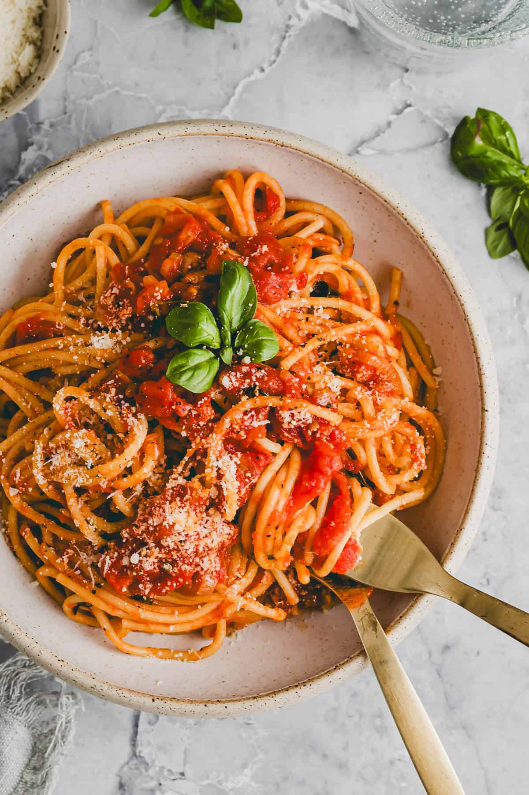

Spaghetti Carbonara Recipe

Description
Spaghetti Carbonara is a traditional Italian pasta dish made with eggs, cheese, pancetta, and pepper.
It's creamy without cream, relying on the emulsion of eggs and cheese to coat the pasta.
The dish is rich, comforting, and quick to prepare, making it a staple of Italian cuisine.
- 12 ounces spaghetti
- 2 large eggs
- 1 cup grated Parmesan cheese
- 4 ounces pancetta (or bacon), diced
- 2 cloves garlic, minced
- Salt and freshly ground black pepper, to taste
- Fresh parsley, chopped (optional)
Steps
- Bring a pot of salted water to boil. Cook spaghetti until al dente. Reserve 1/2 cup pasta water.
- Meanwhile, whisk together eggs and Parmesan in a bowl.
- In a skillet, cook pancetta until crisp. Add garlic and cook briefly.
- Drain spaghetti and immediately toss in skillet with pancetta.
- Remove from heat and quickly stir in egg-cheese mixture, adding pasta water if needed to create a creamy sauce.
- Season with salt and pepper. Garnish with parsley if desired. Serve hot.
Home